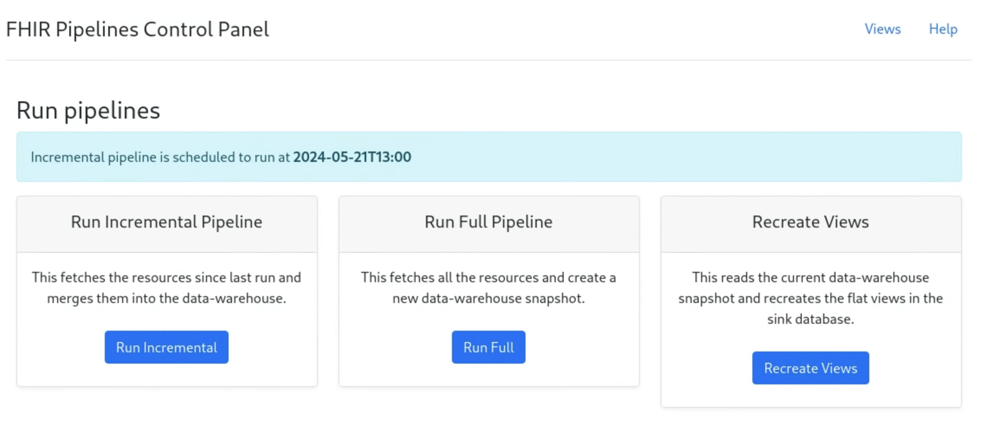

Additional topics
Authentication
Any openIDConnect provider can be used to supply oAuth credentials.
The required set of parameters are:
- oidConnectUrl
- clientId
- clientSecret
- oAuthUsername
- oAuthPassword
You can add oAuth authentication to the pipeline by providing the required set of parameters via the command line or in the /pipelines/controller/config/application.yaml file.
$ java -cp ./pipelines/batch/target/batch-bundled-0.1.0-SNAPSHOT.jar org.openmrs.analytics.FhirEtl \
--fhirServerUrl=[FHIR_SERVER_URL] --outputParquetPath=[PATH] \
--resourceList=Patient,Encounter,Observation --batchSize=200 \
--clientId=[CLIENT_ID] --clientSecret=[CLIENT_SECRET] \
--OAuthUsername=[USERNAME] --OAuthPassword=[PASSSWORD] \
--oidConnectUrl= [OPENID_CONNECT_URL] \
fhirdata:
.....
# The following client credentials should be set if the FHIR server accepts
# OAuth access tokens. Note the client credentials, e.g., the secret, are
# sensitive, and it is probably a better practice to set these through
# command-line arguments.
fhirServerOAuthTokenEndpoint: "https://path_to_endpoint_for_token"
fhirServerOAuthClientId: "THE_CLIENT_ID"
fhirServerOAuthClientSecret: "THE_CLIENT_SECRET"
Config properties
The main configuration for the FHIR Data Pipes Pipeline and Controller is the /pipelines/controller/config/application.yaml file which is well documented.
When using the provided docker images, this will be found in /docker/config.application.yaml
Parquet on FHIR schema
Apache Parquet is a horizontally scalable columnar format that is optimized for performance.
FHIR Data Pipes transforms FHIR resources to "near lossless" 'Parquet on FHIR' representation based on the "Simplified SQL Projection of FHIR Resources" ('SQL-on-FHIR-v1') schema
-
The conversion is done using a forked version of Bunsen library to transform from FHIR (current support for STU3, R4) to the SQL-on-FHIR-v1 schema
-
The conversion is done by going from StructureDefinition --> AvroConverter --> Parquet
-
Configurable support for FHIR versions, profiles and extensions is provided
Monitoring pipelines
The pipelines controller exposes a number of management end-points that can help with monitoring the health of pipelines.
- The application has been integrated with the Spring Boot Actuator of Spring and has exposed Rest API end points for monitoring, health checks, metrics etc.
- The end points can be customised in the configuration file.
- It can easily be integrated with tools like Prometheus for monitoring metrics.
Via the Web Control Panel The Web Control panel provides provides a quick glimpse about the latest state of the application including: * Controls for triggering pipeline run on-demand * A readable view of the application configuration * Location and time of the latest snapshot created by the pipeline run * Metrics of the most recent pipeline * Error logs of the last pipeline if any
These are found in the application.yaml config file in the management: section.
Web Control Panel
The web control panel is a basic spring application provided to make interacting with the pipeline controller easier.
It is not designed to be a full production ready “web admin” panel.
The web control panel has the following features:
- Initiate full and incremental pipeline runs
- Monitor errors when running pipelines
- Recreate view tables
- View configuration settings
- Access sample jupyter notebooks and ViewDefinition editor
